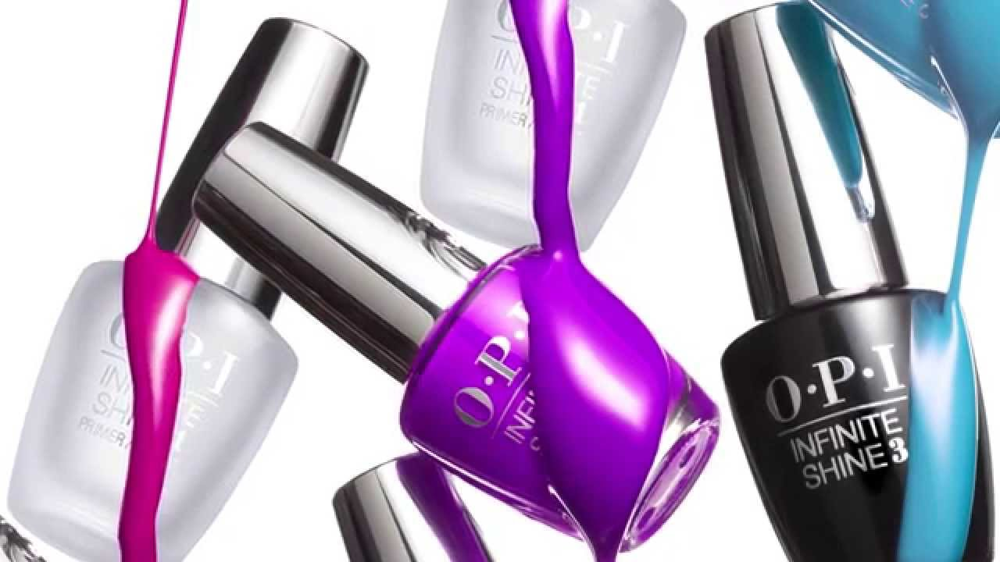

Ladies Beutiful Saloon
Located in UAE- Um Queen
Main Rd
Main Rd
LaPerla Saloon is an establishment dealing with cosmetic treatments for women There is a distinction between a beauty salon and a hair salon and although many small businesses do offer both sets of treatments; beauty salons provide extended services related to skin health, facial aesthetic, foot care, nail manicures, aromatherapy, even meditation, oxygen therapy, mud baths, and many other services.
Massage for the body is a popular beauty treatment, with various techniques offering benefits to the skin (including the application of beauty products) and for increasing mental well-being. Hair removal is offered at some beauty salons through treatments such as waxing and threading. Some beauty salons style hair instead of going to a separate hair salon, and some also offer sun tanning. Other treatments of the face are known as facials. Specialized beauty salons known as nail salons offer treatments such as manicures and pedicures for the nails. A manicure is a treatment for the hands, incorporating the fingernails and cuticles and often involving the application of nail polish, while a pedicure involves treatment of the feet, incorporating the toenails and the softening or removal of calluses.
Beauty salons have proven to be a recession-proof industry in the United States. Although sales had declined from 2008 highs, they remain robust with long term positive forecast.[2] The market is distributed widely across America, with a concentration in the Northeast and Midwest. The US Labor Department estimates employment in the United States will increase 20% between 2008–2014, with greatest employment growth from skin care specialists.[3]